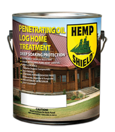
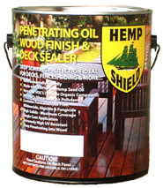

Hemp Shield™ Introduces Log Home Treatment Product Line
Hemp Shield is introducing a new line of state-of-the-art wood protectant products formulated for use on structural logs — Hemp Shield Log Home Treatment™.
Hemp Shield Log Home Treatment™ is available in Clear, Cedar, Redwood, Hickory, Chestnut, and the new Cobblestone Gray. Like all Hemp Shield products, Log Home Treatment™ is made with 100% pure hemp oil, non-formaldehyde fungicide, algaecide, and mildewcide, and the finest trans-oxide pigments.
Hemp Shield Log Home Treatment™ is non-toxic, emits no hazardous air pollutants (HAP's), and produces very few fumes. "Clear" Log Home Treatment™ contains 0% volatile organic compounds (VOC's) and colored versions contain 3% or less VOC's. Hemp Shield Log Home Treatment™ is suitable for interior or exterior use on all wood species used in log home construction.
Hemp Shield Log Home Treatment™ has out-lasted other national brands in Accelerated Aging Chamber testing, and almost completely blocks tannin bleed-through on cedar. A penetrating oil compound, Hemp Shield Log Home Treatment™ can also help prevent and minimize cracking in logs.
Hemp Shield Log Home Treatment™ is available from the Online Store, with free shipping on orders of two or more gallons.

Fibre Alternatives, manufacturer of hemp based construction materials, is proud to announce the market release of Hemp Shield™ — the first and only penetrating wood finish containing 100% hemp oil that is produced in the United States.
Hemp Shield™ is suitable for wooden decks, fences, stairs, siding, shutters, furniture — anything wooden that is exposed to the weather. In extensive tests, Hemp Shield™ outlasted all comers, including the highest priced deck finish on the national market. Extremely UV resistant, the high solid counts of colored Hemp Shield™ provide high hiding, long lasting color to your outdoor wood.
Hemp Shield's unique hemp oil formulation represents a major advance in preservation of outdoor wood — a back-to-the-future choice that, by reviving use of an agriculture based oil feed stock, has created a sustainable, environmentally friendly finish.
Hemp Shield™ outlasts the most expensive petroleum based finishes, yet contains 0% volatile organic compounds (VOC's) like formaldehyde, and no other hazardous air pollutants. Hemp Shield™ also resists environmental attacks from mildew, algae, and fungus.